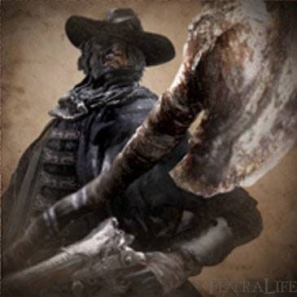

Father Gascoigne |
|||
|---|---|---|---|
|  | |||
| General Info | |||
 |
 |
Location | Drops |
| 2031 | NG (1800) | Central Yharnam | Oedon Tomb Key |
| Defenses Human/Beast Form | |||
 |
 |
 |
-- |
| 95/126 | 95/126 | 95/126 | -- |
 |
 |
 |
 |
| 95/126 | 80/160 | 65/50 | 120/120 |
 |
 |
 |
 |
| 999/999 | 999/999 | No/Yes | No/No |
Father Gascoigne (ガスコイン神父 Gasukoin shinpu lit. "Father Gascoigne") is a Boss in Bloodborne; he can also be summoned beforehand for a certain boss fight.
Father Gascoigne Information
- You can summon Father Gascoigne to help you fight the Cleric Beast boss encounter before you fight him at the Tomb of Oedon. Use the Old Hunter Bell at his summoning location near the fountain where the first Brick Troll is fought in Central Yharnam. He can be very helpful for clearing the bridge on your way to the Cleric Beast if you do not enter the bridge via a short cut from one of the linked houses.
- Once Father Gascoigne dies, you may buy Gascoigne's Set from the Insight Bath Messenger
- This boss fight is not optional as it's currently the only way to reach the Cathedral Ward.
- You gain 1 Insight for finding the boss, 1 Insight for seeing his beast form and 2 Insight for killing him.
- Killing this boss will cause the time to progress, however, unlike it turning to night, or the blood moon appearing, no changes will happen: the sky is just slightly darker.
- Using the Tiny Music Box in the fight can stun him. See below for more information.
Locations
- Father Gascoigne can be found at the end of Central Yharnam. You will need to clear or run by most of the sewers area, head up the ladder before or after the Maneater Boar, and make your way forward and left.
- There is also a shortcut elevator before the bridge with the rolling fireball. This elevator can be activated from the bottom. Once it has been activated once, it will remain active for the entire playthrough, allowing a quick route from the Central Yharnam lantern to the boss fight.
Drops
- Blood Echoes: NG (1,800), NG+(34,393), NG++ (37,832), NG+3 (42,991), NG+4 (51,589), NG+6 and so on (85,982).
- Oedon Tomb Key
Dialogue
During the intro
"...Beasts all over the shop... You'll be one of them, sooner or later..."
Upon killing the player
"Too Proud to show your true face eh? But what a sporting hunt, it was!"
When entering phase 2 (and only the first time you enter phase 2)
"What's that smell? ... The sweet blood, oh, it sings to me. It's enough to make a man sick"
Combat Information
- The Tiny Music Box item has a negative effect on Father Gascoigne in human and beast form. Using the item causes him to stop attacking, instead clutching his head in pain and muttering to himself. This leaves him wide open to attacks, including a charged backstab which can be followed up with a visceral attack. However, if you use it 3 times while he is still human, he will transform into a beast immediately, regardless of his health remaining.
- When he is in his beast form, you can still use the music box to stun him, but this will only be effective once per fight.
- When he transforms his weapon, his range increases but he doesn't really sacrifice anything in terms of speed.
- Transforming his weapon has no impact on his ability to use his Blunderbuss.
- Father Gascoigne is weak to fire damage, both in human and beast form, and can be parried to open up visceral attacks against him.
- Molotov Cocktails can be effective in this fight, especially when he turns into a beast, as his Fire RES decreases while in that form. Oil Urns can help further the damage caused by the fire. Keep in mind that Father Gascoigne is very agile, both as a human and beast, so you need to carefully time your throws.
- The fight has three phases.
- In the beginning, Father Gascoigne fights with a normal Hunter Axe and his unique Hunter Blunderbuss.
- At roughly 75-80% health remaining, Father Gascoigne attacks you with a transformed Hunter Axe and his unique Hunter Blunderbuss, introducing charged and longer reaching attacks.
- When he reaches 50% or less, Father Gascoigne transforms into a beast, leaping and slashing at you quickly with his claws. This last portion can be challenging; make good use of the counter moves listed on this page.
- While human, Gascoigne can be knocked down and staggered by certain weapons/items.
- His beast form increases all of his defenses, except his fire resistance, which drops further.
- During this form, he is considered a beast, and therefore vulnerable to Serration damage as a result. However, he gains considerable amounts of hyper-armor in this form as well.
| Attack Name | Attack Counter |
|---|---|
| Scattergun Burst | You can dodge forward and avoid it, or move backwards and out of it's range. You may also use the tombstones in the area to block the shots. |
| Horizontal Chop | You can dodge into or away from the swing to avoid damage. You may also use the tombstones in the area to put distance between you and attack. |
| Spark Uppercut | You can dodge away from it or parry it if your timing is good. |
| Jump Attack | Dodge away from it or use tombstones to block it. There is a good opening after he performs this attack. |
| Charged Spin | Used in phase 2 with transformed Hunter Axe. Dodge away from this attack. There is a good opening after he performs this attack. |
| Aerial Dive (Beast Form) | Dodge or roll towards him when he's about to pounce. |
| Swipe (Beast Form) | Dodge away or parry. |
| Downward Smash (Beast Form) | Dodge away and attack from range. |
| Berserker Slash (Beast Form) | Dodge away and parry or attack from range. |
Strategies 1 (Use the Tombstones)
While in his human form, Gascoigne's search path is bad and he often tries to attack you even if there are tombstones between the two of you. As a result, he usually runs head first into the tombstone and misses his attack (His Blunderbuss will also be blocked by the tombstone as well). Use this to your advantage by baiting him to attack the tombstones and charge attack him while he's in recovery frames for 200-300 damage. It is also possible to get him stuck on one of the trees in the corners of the cemetery, leaving you the opportunity to hit him from the other side of the tree repeatedly until he transforms.
While in his beast form, Gascoigne will gain the ability to destroy the tombstones, making the above strategy obsolete. On the other hand, he will attack like a madman, giving tons of opportunity for you to stun him with your Firearm and perform a Visceral Attack on him. Keep a moderate distance from him by dashing backwards and wait until he performs his multiple swipe attack and shoot him in the face while he is slashing the air, which will net you multiple Visceral Attack opportunities, making him go down very fast.
Strategy 2 (Quick Weapon & Stairs)
Use a weapon quicker than his axe. The Threaded Cane is ideal here, but other weapons will do. As soon as the battle starts, run for the stairs to the right, and conduct the entire fight on the stairs and the landing in front of the cathedral gate. The graveyard is a difficult place to fight due to its erratic terrain and his arcing attacks. If you need space, drop down from the landing and make the loop back up, healing as needed.
In Phase 1, dodge to your left and away often, if you're not sure what he's about to do. Use the dodge attack whenever you can get away with it, but don't get greedy, even with the Threaded Cane, you can't hit him more than twice in a row before he'll use the Blunderbuss. He has trouble hitting you with the blunderbuss if you're on the stairs, as well.
In Phase 2, his attacks become more linear, with a lot of overhead swings and rolling thrusts, except for the circular swing, which has a long windup so you have time to interrupt or get clear. You can dodge sideways more often, but you still need to be careful.
In his final phase, he's extremely quick, hits hard, and has a lot of reach. Try to save your bullets for this phase. Try to get some distance and have an Oil Urn ready to throw, and then again try to get some ground and hit him with a Molotov Cocktail. Fight defensively, heal freely, and try to just burn him down.
Strategy 3 (Giant Axe Swing)
The heavy attack on the transformed Hunter Axe has the potential to keep Father Gascoigne away from the player during his human phase. It is incredibly effective at keeping him from getting too close to the player as long as the player has sufficiently practiced the heavy swing with R2 and learned the timing, recovery time, and speed. The first swing doesn't always stun Father Gascoigne, however, the player will typically not react to an attack during the second swing, meaning if Father Gascoigne hits the player before their attack is entirely finished, it will connect regardless. This can be used to recover the health from his attack fairly instantly.
The second swing has the added bonus of sending Father Gascoigne flying backwards. While the player could use this opportunity to get in a free hit, the speed of the double-handed axe makes the weapon fairly useless in this scenario. Instead, it is better to simply heal if needed, give yourself ample time to charge the attack when he comes running. He may occasionally fire his blunderbuss shot, so it's recommended to gain some distance yourself or sidestep when he follows it up with a regular attack, and try for the heavy swing again.
When Father Gascoigne dashes towards the player, it's best to have the attack charging. Because Father Gascoigne is such a fast target, he will almost always step in the range of the attack, and rarely attempts to avoid it at all, instead trying to attack you out of it. Once the second swing connects, he typically will try to close the gap between you two again, allowing for you to follow it up with more of the same.
Be aware that every time you send him flying, you will break tombstones if he connects with them while being propelled back. This isn't necessarily a bad thing but always take into consideration that the path his AI will take to get to you is dependent on the quickest route, and if tombstones are in the way of his movements, he will have to run around them. It is important to remember that the heavy attack will drain all of your stamina in one swing, meaning a quick dodge may be possible after a brief few frames, but an attack won't be as effective due to losing nearly all of your stamina. The heavy swing only requires that you have stamina (regardless of how little) to perform the heavy swing, and you will always have a chance to use it if you manage to connect the second swing of the heavy swing with Father Gascoigne, as he will never get up quick enough to stop you before you can. As such, pay close attention to yourself relative to your environment.
It is best to stay in an open area during the fight, as it is possible to have your axe attack interrupted by the environment, resulting in the player getting stunned from their own attack, and possibly opening themselves up to a free hit from Father Gascoigne.
Once the second phase actives, performing the heavy attack is still effective, but far more difficult, as Father Gascoigne will rarely be far from his opponent. Hitting him during his aerial attack is nearly impossible and will result in you simply being smashed underfoot. Your options at this point are:
- Continuously gain distance from Father Gascoigne and prep yourself for a heavy attack. This may result in the battle going on longer, but still has the added bonus of sending him flying when struck.
- If you gained the Saw Hunter Badge, purchase a faster weapon, such as the Threaded Cane, and use that weapon in conjunction with your firearm of choice.
Should you decide to continue using the axe, try running up the stairs, falling back into the graveyard, and preparing for when he comes close. Depending on how far he was from you, he may either have chased you down the building or ran back down the stairs (which would be the best scenario). Be aware of the sheer difficulty that predicting his movements so far in advance can make using the axe in this phase incredibly difficult, so come prepared with items or a backup weapon.
The benefit of this strategy may allow a player with insufficient levels to take on human Father Gascoigne without having to grind so heavily for blood echoes, however the second phase may still require it, thus, it may be necessary to upgrade your axe at the workshop, increase your strength and endurance, or build your character according to your play style and use that for his second phase.
Strategy 5 (Tiny Music Box)
If you fully clear Central Yharnam 2-3 times depending on starting class, you should be able to get enough blood echoes to get either strength or skill to 30. Once there go into the boss fight and immediately head to your left into the open area. Keep Gascoigne away from the walls and gravestones and then use the Tiny Music Box and rush him with a fully charged R2 to his back, followed by a Visceral Attack. Doing this four times will almost, if not completely, kill him, making the entire fight take as little as 45 seconds to a minute.
Videos
Notes & Trivia
- Nothing stops you from picking up the Red Jeweled Brooch during the boss fight. This does not change the quest in any way. also free gem as long as you ignore the fact that you are taking away the last memory he has of his family but lets be honest. that 2% is more important
- In beast form, he becomes stronger, faster and more aggressive, at the cost of his sanity. However, later in the game, multiple details come to light that some beasts, perhaps even all, still have a conscience, meaning their humanity isn't completely gone.
- It's possible to use the Tiny Music Box to stun Gascoigne, but mind that can't interrupt his combos this way, and on the third stun he will assume Beast Form regardless of health. In Beast Form, you will be able to stun him one last time before this strategy stops working altogether.
- His equipment set reveals that his clothing had a "pungent beastly smell," indicating that his transformation had been slow and ate away at his humanity over time.
- Even though his equipment set is actually above-average when dealing with fire damage, Father Gascoigne is still weak against fire damage.
- This is an indicator of just how far the beast plague has taken its toll on Father Gascoigne; he's become more beast-like over time.
- In the Alpha version, he muttered "Umbasa" upon killing the player, a reference to one of From Software's games, "Demon's Souls".
- If you summon Father Gascoigne for the Cleric Beast boss fight and you happen to have the Tiny Music Box, using it will make Father Gascoigne give you an unimpressed grunt or a small chuckle.
- Gascoigne's surname is based off Irish origin. His dialogue, "beasts all over the shop" is also based off from an Irish colloquialism.
- As his attire description reveals, the title "Father" is actually a reference to his literal paternal status: he has 2 daughters, both of which still hope for his return after the hunt.
- However, it could also point to Gascoigne's Irish connections, as priests in Ireland are colloquially referred to as "Father", think calling someone "Sir".
- There is a very rare glitch where Gascoigne duplicates himself upon transforming, leaving his human form standing inert where he transformed and his beast form acting as normal. Hitting either will damage his health bar, meaning one player can distract the beast form while another hits the defenseless human form.
- Oddly enough, Father Gascoigne actually carries the Hunter Pistol, although it behaves like a Hunter Blunderbuss.
- Also, Gascoigne can use his firearm even while his axe is transformed.
- Normally players cannot use firearms when the Hunter Axe is transformed, giving Gascoigne a unique characteristic amongst many Hunters and Old Hunters.
- When transformed he only has 4 toes.
- In his transformed state it is possible to lure him into clipping through the stairs and falling to his death. Stand halfway up the stairs and have him charge at you from the foot of the stairs, and on rare occasions, he will miss the stairs hitbox and fall straight to, leading to an instant victory after he hits the bottom of the world.
- Father Gascoigne hates the sewers. If you have summoned him for the fight against the Cleric Beast, any attempts to lead him near the sewers will result in him using his Silencing Blank and leaving. Effectively wasting your Insight.
Gallery

The garb description actually says the “father” title is given to clerics in a foreign land, and that yharnam doesn’t have that title, and has nothing to do with him being a dad. Meaning that he’s actually from boletaria (the foreign land) since he says “umbasa” in his cut dialogue, something only the clerics say in demon’s souls.

- Anonymous
Father Gascoigne is the friendly introduction to the totally calm and forgiving Bloodborne combat.
- Anonymous
- Anonymous
I beat him no problem, on my third try. You just have to run around the gravestones and get up close against one and he will try to walk straight into the gravestone to reach you instead of going around. The hunter's axe can reach him from behind the gravestone, but he can also hit you. Simply back up a bit when he swings and when he's off balanced you attack him. For his beast form I just ran up the stairs and when he reaches the top of the stairs run back down and hug the side of the staircase and he will try to walk straight through the railing to get to you. The extended version of the hunter's axe can hit him up there or you can lob Molotov cocktails at him
- Anonymous
Very fun boss. Wish it was more difficult tho tbh, 2nd try for me
- Anonymous
This bastard is an amazing skill check. On my first palythrough it, work Bloodborne being my first soulsborne game, and myself being like 13, it took me close to 70 attempts to finally beat him with a +3 hunter axe and a blunderbuss. The incredible feeling of victory was one of the things that really got me hooked on the games. Last time I fought him I killed him in like 3 minutes with a +1 axe (without the stairs thing). Your performance in this boss fight really shows you how far you've come in terms of skill.
- Anonymous
- Anonymous
- Anonymous
I need confirmation. I play this Game for about 4 - 5 years now and recently starten a new playthrough. I went to Gascoigne and fought him as usual but for some reason whenever I parried him it was Impossible for me to riposte him. I used the hunters pistol so frames weren't the issue. Is there some hitbox bug and has anyone else experienced this or am I just unlucky? During these years I only can say that Gascoigne seems to be the only enemy i had this issue with. Other Enemies I parried and didn't manage to riposte were either trades or bad timing.
- Anonymous
I just beat him and the ecstasy/relief that I acquired was intoxicating.
- Anonymous
Just a reminder to everyone that Asmongold beat him first try.
- Anonymous
Just noticed I'm my latest playthrough that his hunter's axe is of a different shape than the players
- Anonymous
- Anonymous
- Anonymous
A note on the Music Box strategy: a skill build can skip Gascione's beast form with stats way below 30. (I tested with 21 Skill and a +3 Cane.)
His forms don't have separate health, so if you bring him down to ~40% and then wait to land a Visceral attack, he'll drop to far below his normal transformation %. Once he transforms, play the Music Box immediately, and then backstab or simply slash away with the whip for bonus Serrated damage. He'll fall before it wears off, without ever getting a swing in.
- Anonymous
His OST is titled the “The Hunter” because he’s out there doing hunter’s business until he succumbs and we take his place and carry on.
- Anonymous
- Anonymous
****ing awesome fight, managed to kill him on the first encounter a quarter of a second before I died of "slow" poison.
- Anonymous
Keep in mind there is someone out there who can make his phase 2 sounds
- Anonymous
No matter how many times I replay this game, Gascoigne always gets my heart racing. In fact, I think the only other boss that does that for me in the entire series anymore is Orphan of Kos.
The first and the last... If Gascoigne had his health pool, I bet he could compete toe-to-toe with OoK. Coupled with the frantic music, this fight is the epitome of action horror.
- Anonymous
- Anonymous
- Anonymous
I can't tell if I'm going crazy, but it almost sounds like he's muttering "Oedon" just as he dies, right after he finishes howling, but in his deep, gravely beast voice. I've played this game so many times, but this is the first time I've ever even heard that. I watched some gameplay videos to make sure, and it's definitely there, but I can't tell if he's really saying "Oedon" (especially since Eileen and the Chapel Dweller pronounce it more like "Uhdon").
- Anonymous
My first time playing bloodborne, I was pretty surprised to find out I was fighting the phantom which I summoned to help me with the cleric beast
- Anonymous
i know that "he hates the sewers" is said in a joking manner, but it's actually because fromsoft doesn't want you using Gascoigne to battle Gascoigne, which is a shame since that would be pretty funny
- Anonymous
Safest method:
1. Make your weapon long (any of the starters)
2. Hide behind gravestones and time/spam R2
3. Run to the obelisk for cover when he transforms
4. Use the music box when he is about to reach you
5. A couple whacks, a backstab, then 1 or 2 molotovs as he gets up, and he's finished
- Anonymous
Am I the only one who run trought the arena listening to his music at the second phase?
- Anonymous
I remember when I first fought this guy. Went in blind, and tried to cheese him behind some tombstones. My eyes bulged when he transformed and I just crapped myself when he lunged, shattering the tombstones and sending me airborne.
- Anonymous
- Anonymous
- Anonymous
"Gascoigne's surname is based off Irish origin." Source? Gascoigne is a British surname of Old French origin
- Anonymous
real boss here are the graves that blocking your backward dodges :/
- Anonymous
Ten molotovs plus a few well-timed evades on his second form, at which time he was almost dead. Took one minute to beat him first try, I love molotovs!
- Anonymous
molotov cocktails are extremely effective. as soon as he transformed i chcuked three on him and he was dead son!
- Anonymous
- Anonymous
Well of course Gascoigne hates the sewers. Depending on what you do his children may end up dead there.
- Anonymous
Wish more hunter bosses like him were in CDs. This guy is fun as hell to fight. 35 Amygdalae, watcher trios and watchdogs back-to-back on defiled chalices? Not so much.
- Anonymous
A true tutorial boss. I knew this game was right up my alley when i beat him first try, first build. My hands were shaking and i was out of vials by that time. Did you know that according to PSN, roughly half of the people who bought the game have gotten the trophy for beating gascoigne? Sad they don't know what kind of experience they're missing
- Anonymous
very easy on an arcane build. idk if molotov cocktails are effective on other builds too, but 9 of them almost killed him (one missed) and the red was super easy, just cut him to shreds with saw cleaver
- Anonymous
Is it just me or is his moveset really similar to Gwyn in DS1
- Anonymous
I wish you could co op or at least he could be somewhat related to the old hunters dlc
- Anonymous
In my opinion, Father Gascoigne is the best Boss Fight in all of SoulsBorne... I had trouble on him the first time because I had been used to attacking slowly and patiently due to Dark Souls, but Father Gascoigne conditioned me to play like a true hunter, and I felt that was him passing his curse onto me... A truly amazing boss that has my heart racing every time I fight him... Wow
- Anonymous
I never had any trouble with Gascoigne, both in NG and NG+ it took me 2 attempts. And this is my first SoulsBorne game.
I beat Father Gascoine on my first try and he was a hard fight, but if you play patiently the boss will be a lot easier.
- Anonymous
- Anonymous
Wiki is wrong about 2 daughters. He only has the 1. Other girl is never mentioned by the daughter in the window at all.
- Anonymous
I beat this guy on my second try, I really don't understand why so many people had so much trouble with him. I guess soloing O&S in DS1 has trained me well...
- Anonymous
Maybe I read it wrong, but the Tiny Music Box only works once in his beast stage. At least it did for me, multiple times I used it and it only worked the first time yet it doesn’t state such here.
- Anonymous
Noticed on NG+ he sufferes from the same glitch as Living Failures and Orphan. Oeden Writhe and Blood Rapture are 4x as effective on a visceral
- Anonymous
Right. My recommendation is that you don't try to attack when you enter the battle. He is fast and can attack faster than you. Dodge to the side and use a quick attack chain to get a head start on taking him down. When he fires with his gun, if you time your Dodge/roll right, you can actually avoid taking any damage. I do not recommend this as a strategy... This is a thing you should only do if you are desperate to get away or have health to spare. In the first stage of the fight, the long rage axe, if that is your chosen first weapon, is your friend. It allows you to keep some distance and a little leeway when dealing with him. Do not attempt to party his upper cut attack. If you have space, back stepped as much as you can.
- Anonymous
I get it, it's a 'hard' boss. Being the fact that he has a ton of health and can hit hard. But as long as you can dodge, learn to not be greedy, and take advantage of his pauses (like in any SoulsBorne game) then you'll be fine. Being someone who played the other three games, I'd have to say he's one of the easier bosses in Bloodborne. Heck, compared to the other games too. He's still one of my favorites, always bringing me back to play it again.
- Anonymous
Im was new to soulborne games before bloodborne and on my first playthrough he absolutely destroyed me. I mustthe have tried at least 20 times before finally beating him. Such a wakeup call for a newcomer.
- Anonymous
I managed to get him to half hp because for some reason Cascoinge and I were on the other side of a wall of graveyards. He kept trying to long attack me abd i did the same. After He transfirmed i shot oil over him and spammed molotovs.
- Anonymous
Oh yeah? Well I killed him on my Zerost try with my bare fists just throwing gang signs and scaring him to death with the kool ass hunter torch plus 11, the game was so impressed I was instantly rewarded with NG+99 and OoK killed himself out of amazement. Pro Playa, sheeesh:)
- Anonymous
- Anonymous
Question, why does his necklace change when you summon him from when you fight him? Is it the necklace that from soft was selling but never really used in darksouls? -Sheba
My Strategy For Father GitGud, Parry Chain his Health bar to zero. For some reason I have less trouble with the end game and DLC's bosses than this guy. every time he attacks, parry it every time and riposte. that's all i could do. repeat until HP = 0
- Anonymous
this boss is hard at first, I won't lie. i invented a tactic on him: trade 2 attacks, then dodge. If You are good at parrying it makes much easier. You can use the Tiny Music Box in 1st phase MAXIMUM 3 times because more will trigger his transformation. When You're in 2nd phase, Gascoine's hp is a little bit below half, and You know that he will transform very soon, keep yourself very near to him, as he will begin transforming You have 2 free attacks then 2 fast dodges. After he transforms, keep his sides, try to parry if you can, and has less than 1/3 of his hp (about 3 to 4 good hits after transformation) use the music box. I swear that, this tactic makes that fight a piece'o'cake
- Anonymous
I know alot of people like the idea that he kills his wife but I don't believe so. I think it's more evident that he witnessed other yharnamites killing his wife and that's when he snapped and assumed everyone was a beast, just by the way he says "Beasts all over the shop, you'll be one too, sooner or later." and when he kills you he says "Too ashamed to show your true form? ..." A hunter wouldn't just start thinking this way unless provoked, willpower is in their training (Several items confirm that), also being an old hunter he must know the consequences associated with killing other hunters/humans. This is why I believe that he's become disillusioned after witnessing his wife be killed by apparently normal, albeit hairy, yharnamites that we see him hacking up when we stumble upon him. This is what makes him embrace beasthood because by his experience, the hunter oath has become forfeit. I think this makes him a much more relatable character as well instead of just going mad and slaying his wife, who is more human appearing than anyone. Also curious why he doesn't show up in the Hunters Nightmare later on along with Amelia and Laurence. He definitely fits the criteria for it. Would've been cool to meet up with him again here perhaps broken and fully disillusioned, a new "crastfallen" for the Nightmare if you will.. *shrugs* squandered opportunities FromSoft.
- Anonymous
Well just beat this dude one attempt, heard he is hard but I’m a bit skeptical. I’m level 20, is that too high for this fight? I mean, I did beat ds3 up to ng+5 but I wasn’t expecting to one try all the bosses up till this point...
- Anonymous
- Anonymous
I honestly don't see why people think this is a difficult boss, don't get me wrong I loved fighting this boss. The fight was very fun, going toe to toe with a fellow hunter. It felt very engaging. But I honestly didn't find the fight all that difficult. Prior to Bloodborne i had only played Ds3 and I beat Gascoigne on my first ever try.
- Anonymous
- Anonymous
During my battle with him he got stuck on the stairs lol. Rapidly run up and down the stairs when he's in beast form whilst dodging. When he's coming down quickly run to the side of the stairs near the rails, there's a good chance he'll attempt to attack and charge you through the rails and not be able to come down. Just stay a bit out of his reach and keep pulling your weapon back all the way hitting him until he's dead. Do not walk to the front of the stairs if you want him to stay stuck. This is the third time I won due to a boss being stuck....
- Anonymous
I just beat him and he didn't transform until like 10-15% HP. Smack him a couple times during transformation and he was a two shot from the point he got up. Is this normal? Lol
- Anonymous
I can't see how this boss could be considered difficult, given that you have the chance of fighting him with a +2 saw spear.
When he's human, all you have to do is attack aggressively.
When he turns into beast form, just dodge to the side and hit his butt a couple of times. Rinse and repeat.
He dies just the moment you begin to have fun.
- Anonymous
- Anonymous
- Anonymous
- Anonymous
- Anonymous
Gascoigne is not as difficult as so many seem to claim. Definitely make use of the tombstones and the big tree to control the space for both offense and defense. This lets you temper his attacks much easier and to use vials and even the music box, as needed. If you really want a challenge, take him up the stairs.
- Anonymous
Really hard boss - https://www.youtube.com/watch?v=vtQOHe3ZdEM
- Anonymous
This is my fight: https://www.youtube.com/watch?v=vtQOHe3ZdEM
- Anonymous
Ruines cutscene with a flailinf cloak. How did that even pass quality contril, stupid japs
- Anonymous
What a steaming crock of horsesh1t. It's a cut scene... No, it's a boss battle... And your dead. Thank you for playing.
- Anonymous
Little correction - Gascoigne isn't an Irish name, it's French, meaning 'From Gascony'.
- Anonymous
By far the coolest boss fight in the game. Not the hardest, but the coolest
- Anonymous
- Anonymous
It's odd that this strategy is missing - if you don't use the music box AT ALL until he's a beast, it works the full three times.
The More You Know
- Anonymous
In the intro to the fight, I got my first look at his face and the hat, hair, and bandaged eyes looks VERY familiar. Isn't he the one who talks to the player in the very beginning of the game and gives you a blood transfusion?
- Anonymous
The amount of echoes specified here does not seem to be correct... I am 100% sure I'm on NG+6, and I just received 152,856 souls for defeating Gascoigne. I checked on youtube and others claiming to be on NG+7 also received 152,856, which makes sense given that NG+6 and NG+7 is supposed to be the same.
- Anonymous
A semi-effective strategy that I've been using (nearly succeeding until his beast form) is dodging and then using the Saw Cleaver's dodge attack twice. Jump back and heal if you need. When he goes super swanky long axe mode it makes it semi easier to parry him with the Hunter's Pistol. It's when he goes into literal Beast Mode that I get killed easily.
- Anonymous
once you start his boss fight he no longer becomes a summon for the cleric beast.
- Anonymous
Going to the yhernam girl window with him as a summon does nothing
- Anonymous
It should be added that if you use the tiny music box all the 3 times in human form and once in beast form he will say in his death "forgive me" with his beast voice, is not dialogue is sound effect tho
- Anonymous
What happens if you summon Gascoigne and go to the Young Yharnam girl's window?
- Anonymous
What the heck is going on with the wiki. Why does Gascoigne have so many names?
- Anonymous
I like to pretend that Gascoigne was the most recent Hunter, but you, the player, are recruited to dispatch and replace him. The fact that his family carries a music box that plays Mergo's Lullaby really sets him apart from all other characters, and I feel like he must have taken part in the cyclical intervention of the Mensis ritual, just like you must do in order to end Night of the Hunt. Perhaps the Lullaby reminded him of his original purpose, but simultaneously filled him with the dread that the Hunt would never end, no matter how many times he prevented the ritual, which is what shatters his psyche and reduces him to a panicked beast, even driving him to murder his own wife.
If you summon him you can actually see that he one-hands the axe even when it is transformed. Maybe it is due to him size and strenght but i dunno.
- Anonymous
Apparently, the Huntsmen call out for the death of the minister while you have Gascoigne's set. Minister is pretty much a priest in Christianity. Someone who is authorized to teach the religion, perform, weddings, baptisms and funerals.
If they are referring to the minister as Gascoigne, wouldn't it mean that the Father is actually a title and not just a reference to the fact that he has two kids?
Ministers can be called pastors, and pastors can marry.
I noticed that the Healing Church has some Christian concepts in it, so wouldn't it possible that Gascoigne himself brought someone of that with him from outside Yharman?
Just a wild guess, I guess.
- Anonymous
As a player who died at least 30 times on the cleric beast i'm really proud i almost beat this guy on my first go :D
- Anonymous
This fight is incredibly easy if you just parry him constantly. Then, while he's transforming, run up ad spam attacks on him, and back off after it knocks you back. Then, shoot him while he's mid-jumping and parry him, get a few more hits in and get them blood echoes.
- Anonymous
I making some research on his name and apparently it's a South French surname of Basque (Northern Spain) origin. Does anyone have any information on the Irish origin of his name?
- Anonymous
i really like him his is to power full becuse i can't kill him i start this game just for now
i have a way to kill we can us song box
- Anonymous
Did anyone notice that his blunderbuss is practically a break-open shotgun? That's kinda unfair lol
- Anonymous
Anyone notice that Gascoigne is the only unique summon? Like his move sets are different from other npcs. Yeah, tall dad good job being the only different summon
- Anonymous
Father Gascoigne has a kick attack: https://clips.twitch.tv/SuspiciousTacitTriangleSuperVinlin.

{kind=link}
{kind=link}
{kind=link}
{kind=link}
{kind=link}
{kind=link}
{kind=link}
{kind=link}
{kind=link}
{kind=link}
This is where bloodborne's casuls get transformed to hunters...
1
+10
-1